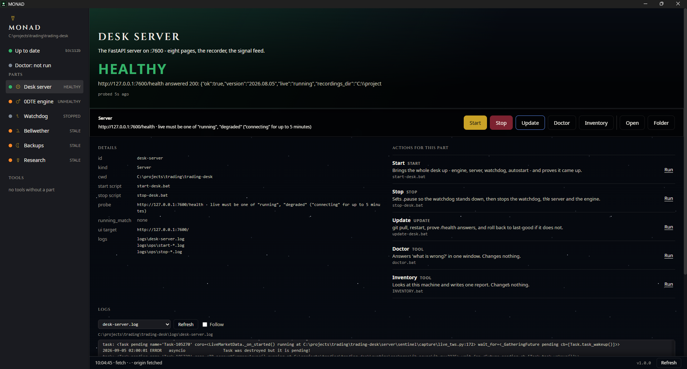

TWS / IB Gateway:7496 · read-only
Interactive Brokers Trader Workstation, logged into the live account. The only source of market data.
Where it lives
The operator's Windows box, port 7496
Winnipeg
Curious, self-taught. I build trading systems, market research tools, training software, and games.
Good enough is not good enough. I test my own systems against themselves and keep improving them, so the work rarely sits in a resting state. All of it runs on design systems and a custom AI harness tuned to my workflow, built over the last four months — it started as a simple loop and became the design and production system everything here goes through. Everything below runs; nothing here is a mockup. Running is not the same as finished, and the games are where that shows.
Read-only analysis and depth-of-book recording on one side; execution algorithms on the other. The analysis never places an order — that is built in, not configured. The execution side fails closed. Both are guarded heavily and tested hard.
CROR rule drills, switching, signals, and general railroad safety. Every answer cites the exact rule it came from. The rulebook governs, not recall.
Ideas I wanted to see run — to play, or to find out whether I could. The method moved from single HTML files that need no installation to config-driven, typed, systems-heavy builds. None is finished. All of them run.
Figures measured 2026-09-08 from the repositories on this machine, and reproducible from them. Nothing here is estimated.
Tier 2 · the work
A read-only market desk. It records the tape, measures it, and reports what it sees. It never places an order — that is a constraint in the build, not a setting. Below is every path data takes through it, one part at a time.
Market data enters onceis measured onceand leaves by four separate doors: a tapea webhooka web page and a one-line file.
From the book to the page, once.
Interactive Brokers Trader Workstation, logged into the live account. The only source of market data.
The operator's Windows box, port 7496
The market-data connectors and the tape schema. One connector for a live TWS feed, one for replaying a recorded tape.
book + prints, read-onlyserver/sentinel/capture/
Assembles one cycle's worth of market state from the connector before the engine sees it.
server/sentinel/engine/cycle_input.py
One pass over the book and the prints, producing a market state that everything downstream reads.
server/sentinel/engine/runner.py
The three book-and-tape measures, and the session-window rules that decide when a setup counts.
market stateserver/sentinel/alerting/detectors.py
The single place every alert passes through on its way out. It counts them, sends the summary, and appends the signal line.
server/sentinel/alerting/pump.py
The live surface: current state, absorption, the recorder, the tape and signal listings, the arm and stop commands, and the read-only account view.
5 guards1 openserver/routes/live.py
Is the desk watching, and what is it seeing right now?
web/index.html, web/live/app.js
The only reader of these pages.
http://127.0.0.1:7600
The only chain that can end in a trade. It is three steps long, and it starts with a file.
The single place every alert passes through on its way out. It counts them, sends the summary, and appends the signal line.
server/sentinel/alerting/pump.py
An append-only file. One flushed line per fired break alert, and nothing else.
one flushed line per fired breakdata/signals/
The only part of this system that can place an order. It reads signal lines, applies its own rules, and mostly refuses.
the bot reads, and mostly refusesbot/ (vendored) · C:\projects\trading\sentinel-trader
The platform the bot sends brackets through, over the ATI interface.
the only path to an orderThe operator's box
Nothing is believed unless it was recorded.
Owns the connection to TWS and drives the detection loop. Runs its own asyncio loop on a daemon thread.
1 guard1 openserver/live_session.py
One gzipped line per cycle, written inside the New York window (09:30-16:15 ET).
inside the NY windowdata/recordings/
The scoreboard for one session: how many setups, which triggers fired, what each one did next, and whether hidden size confirmed or rejected the break.
scored from the tapeBeside each tape; the Asia corpus routes into asia/
The session index, the per-session report and scoreboard, the pooled backtest, the doctor read-out, and the local-LLM analyst and council reads.
1 openserver/routes/review.py
What happened in this session - computed from the tape rather than from memory.
1 guard4 openweb/review.html, web/js/review.js
The only reader of these pages.
http://127.0.0.1:7600
A break that hidden size ate is not a break.
One pass over the book and the prints, producing a market state that everything downstream reads.
server/sentinel/engine/runner.py
Watches a price level soak up an attempted break - hidden size absorbing the move.
server/iceberg/absorption.py
Joins an absorption event to a break, but only when it lands inside both a time window and a price gate.
the absorptionserver/sentinel/alerting/iceberg_at_break.py
The single place every alert passes through on its way out. It counts them, sends the summary, and appends the signal line.
server/sentinel/alerting/pump.py
Posts a short human summary of an alert to one webhook.
server/sentinel/alerting/discord.py
Where alerts arrive as they happen.
a sentence, no numbersconfig/alerts.json, or DISCORD_WEBHOOK_URL
One way, and absolute.
Public macro and positioning data, pulled by the regime grader.
bellwether/bellwether/providers/
A weekday regime grader: sector rotation, macro and COT, graded to a single letter.
bellwether/ (vendored sibling)
One graded report per weekday, as HTML, Markdown and JSON.
bellwether/reports/out/
Lists the stored regime reads and frames the chosen one.
one way: the desk only readsserver/routes/regime.py
Bellwether's grade for the day, framed inside the desk.
web/regime.html
The only reader of these pages.
http://127.0.0.1:7600
…
Three of these run right here. Every figure in the desk demo is synthetic and says so — the desk cannot be shown with real data on this machine, and inventing a market reading to look impressive is the one thing it must never do.

Topology read out of the running code: 54 parts, 78 connections,
shown 3 at a time. Guard and defect badges appear only where a part's file matched
real data — a part with no badge is unmatched, not clean.
The stage is an enhancement. With JavaScript off, every part of every path is present as a
plain document, and under reduced-motion nothing animates and nothing auto-advances.
Games
Every panel is a live attract screen — a standalone asset built for each game, running now, no input needed. Click a name to play the game itself, in the browser, with nothing to install.
10 attract screens, at most 6 running at once. Each is a real
canvas loop, so that is a CPU budget rather than a layout preference: a panel starts when
it comes near the viewport and stops when it goes well past.
Playing a game stops every panel — one loop at a time.
With JavaScript off no panel mounts and the list below is the page, every game still one
click away. Under reduced motion nothing is mounted at all.